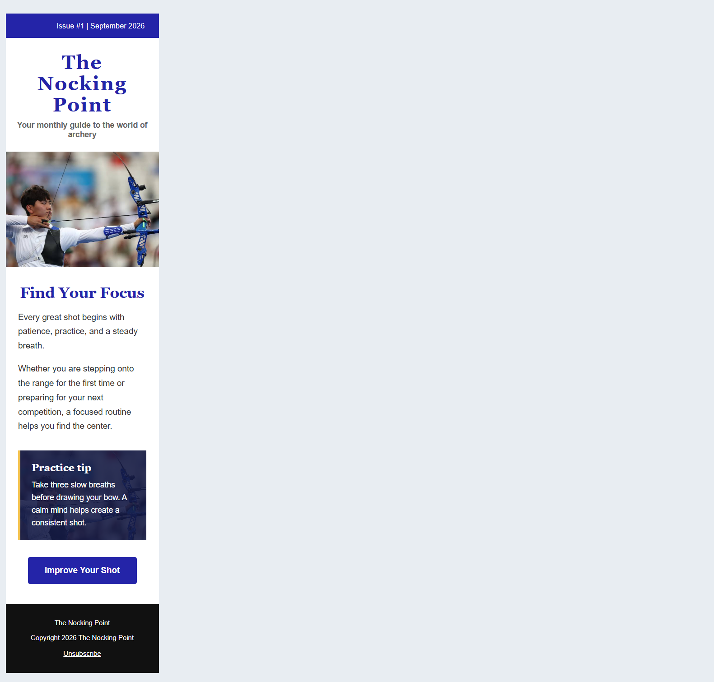
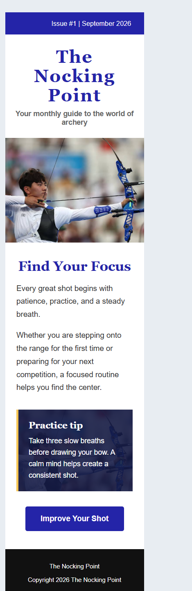

Pros: simplest markup, works in nearly every email client, and degrades cleanly.
Cons: small click target, lower visual prominence, and less obvious as the primary action.
Pros: familiar action shape, centered alignment, high contrast, and generous 15px by 30px padding for easier tapping.
Cons: some older clients can remove CSS styling, so the link still needs meaningful text and a useful destination.
lang="en", a descriptive page title, and a viewport meta tag.width: 100% with a 600px maximum and automatic height.
1280px viewport; the fixed 600px inner table is centered.

390px viewport; the table and hero image contract to the available width.